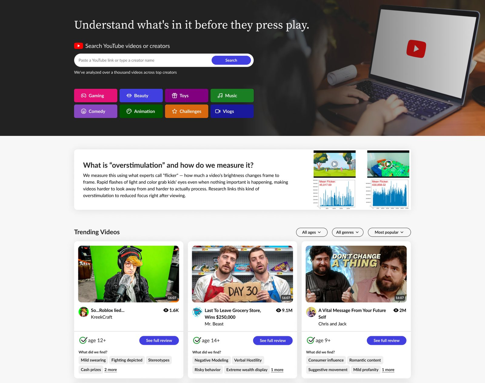
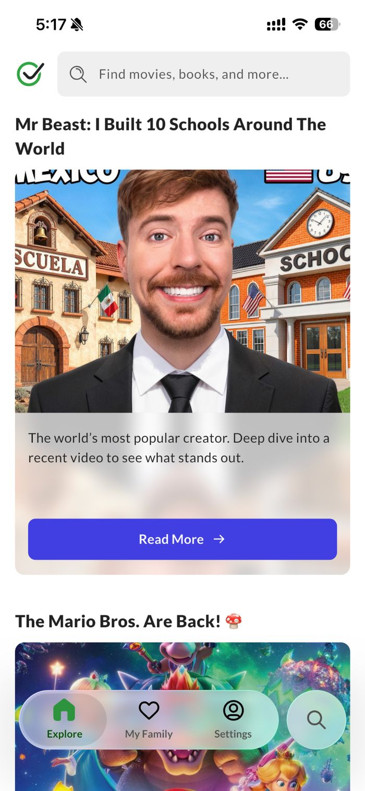
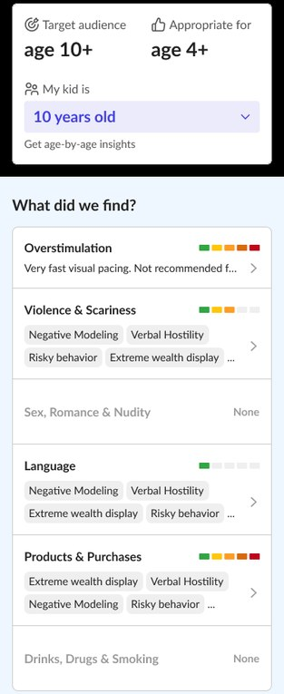
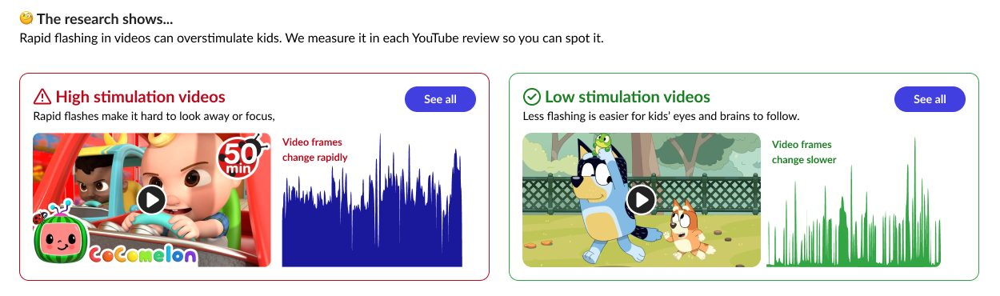

A parent guide for any YouTube video, in minutes
Patent pending · USPTO 63/929,523
YouTube and TikTok now take more than half of young kids' viewing time, far more than any team of editors can review. I invented a multimodal engine that reads a video's frames, audio and transcript against 20 years of Common Sense rubrics, then returns a parent guide with every concern timestamped.
It has gone live in the Common Sense Media app, which has 300,000 users, and I refined it through rounds of parent feedback.
"I just can't trust YouTube to have the same mind I do as a parent."Parent in our user research




Productized cutting-edge academic research on overstimulation for kids
Some of the most-watched kids' videos have nothing a content rubric would flag. I launched a partnership with UC Berkeley's Kidd Lab to turn their research on flicker, the brightness change between frames they link to overstimulation, into a parent-facing product.